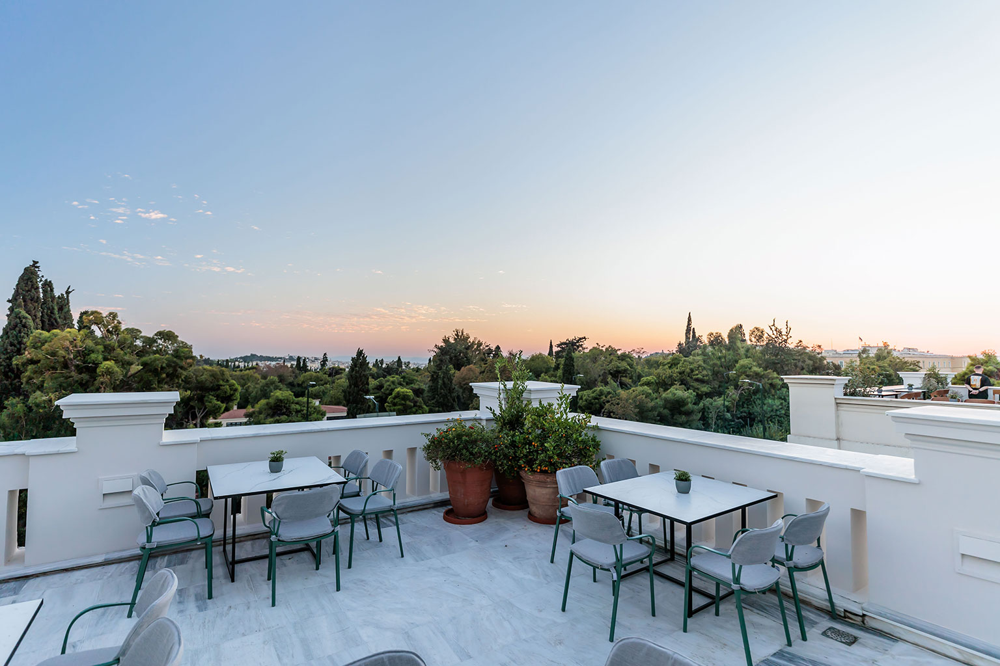
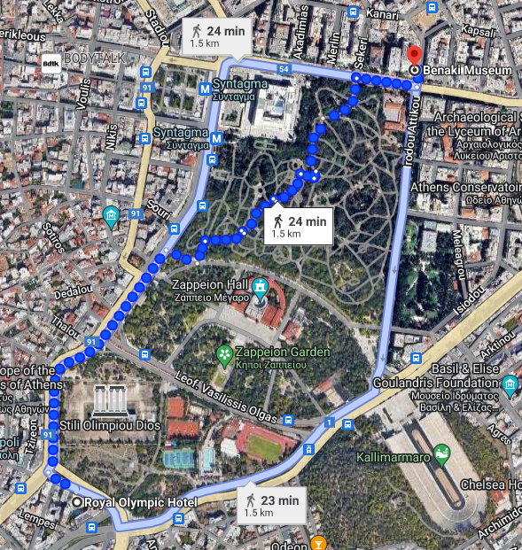

Welcome Reception
EuroSys 2024 will host a welcome reception at the esteemed
Benaki Museum of Greek Culture, on Monday the 22nd of April 2024 starting at 20:00.
Set amidst the vibrant heart of Athens, this iconic museum offers a captivating journey through Greece's rich history and cultural heritage, providing the perfect backdrop for an unforgettable evening of networking and celebration.
The welcome reception will take place at the museum's enchanting terrace, overlooking the National Garden, the Hellenic Parliament (Syntagma), the Acropolis, and the bustling streets of Athens.

How to get there
The Benaki Museum of Greek Culture, at the crossing of Vasilissis Sophias Ave. and Koumpari St., can be reached from the main conference venue on foot in about 25 minutes (1.5km), walking through the National Garden of Athens.
Important: Please note that the Benaki Foundation hosts a number of museums in Athens!
To avoid confusion and ensure you arrive at the correct venue, please double-check that you are heading to the
Benaki Museum of Greek Culture, at the address provided above, or that you are following the directions on
Google Maps.
For those opting not to walk, the suggested alternative transport is by taxi.
